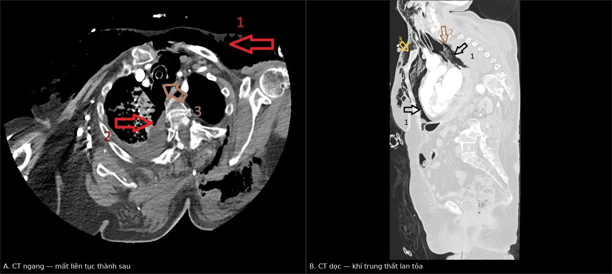
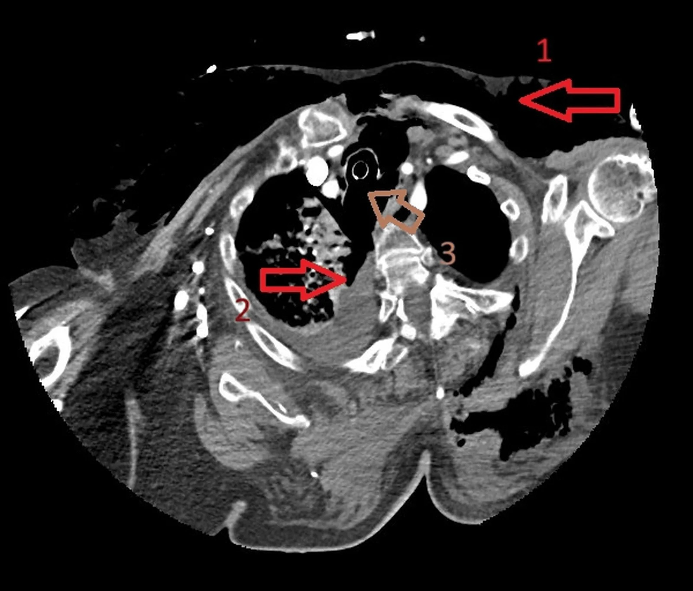
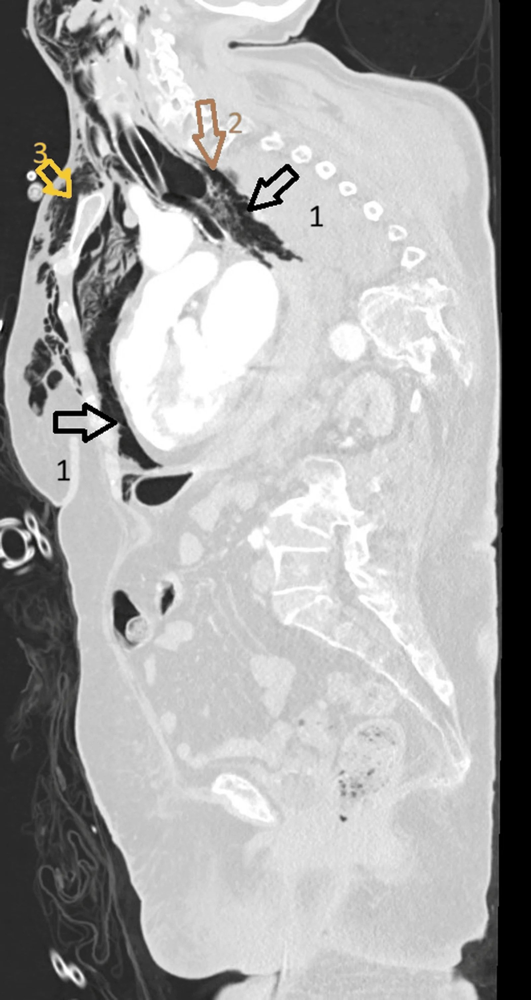
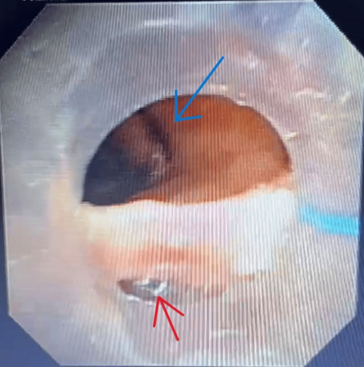
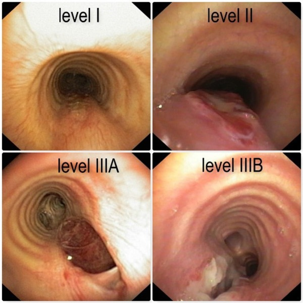

3057 — Vỡ khí quản – phế quản lớn sau đặt nội khí quản: khí trung thất "không có tràn khí màng phổi", phân độ Cardillo và ngưỡng mổ
Tags: pattern:tran-khi-trung-that pattern:hep-duong-tho vung:khi-quan vung:phe-quan vung:trung-that vung:duong-tho anatomy:khi-quan score:Cardillo protocol:CT-lat-mong protocol:noi-soi-ong-mem
Mức chắc chắn (certainty): tổng hợp y văn (literature synthesis) — ghép loạt 62 ca vỡ khí quản sau đặt ống có phân độ Cardillo cải tiến (Front Surg 2022, PMC9727090), ca 4 cm lan tới eo ngực, mổ mở nhưng tử vong (Cureus 2026, PMC13570639), ca rách thành sau 1–1,5 cm sau đổi ống mở khí quản qua da (Cureus 2025, PMC12752804), ca rách toàn thành 3 cm điều trị bảo tồn (J Med Case Rep 2025, PMC12482526), ca biểu hiện muộn ngày 2 với tràn khí hai bên (Lung India 2020, PMC8066937), ca ống hai nòng (Int Med Case Rep J 2026, PMC13633767) và ca rách 7 cm vá hai đường (J Cardiothorac Surg 2026, PMC13508291). Không có ca do nhóm tự chụp.
Câu hỏi thực hành: nữ bệnh nhân đầu 70 tuổi được đặt nội khí quản cấp cứu vì hôn mê; 6 giờ sau cổ – mặt sưng, sờ có tiếng lép bép, máy thở báo rò khí dai dẳng dù đã bơm căng bóng, X-quang không có tràn khí màng phổi. Câu hỏi: khí trung thất này do vỡ phế nang hay vỡ thành khí quản, chụp gì để thấy chỗ vỡ, và bệnh nhân phải mổ hay có thể theo dõi? Bài chốt ba quyết định: (1) rò khí quanh ống + bơm căng bóng không kín = khiếm khuyết thành khí quản, không phải "bóng hỏng"; (2) CT lát mỏng 1 mm + dựng ảnh dọc tìm mất liên tục thành sau, rồi nội soi ống mềm trong 48 giờ để đo độ sâu – độ dài; (3) phân độ Cardillo: I–IIIA điều trị bảo tồn (keo fibrin) khi bệnh nhân không cần thông khí áp lực dương; IIIB–IV mổ. Nối 3047 – Hẹp khí quản sau đặt nội khí quản, 098 – Barotrauma & tràn khí do thông khí áp lực, 612 – Cấp cứu đường thở trên ở trẻ.
1. Tổng quan bệnh học – cơ chế hình ảnh: vì sao rách lại ở thành SAU và vì sao khí đi vào trung thất
- Tần suất – con số quyết định mức nghi ngờ: vỡ khí quản sau đặt ống nội khí quản đường miệng khoảng 0,005% (1/20.000 ca đặt ống điện quy), ước tính 0,005–0,19% ở các loạt gần đây (PMC13508291, PMC9727090). Ống hai nòng làm tăng mạnh: 0,5–1% (PMC9727090); loạt gộp 187 ca vỡ đường thở do ống hai nòng có tử vong 8,8% (PMC13633767). Mở khí quản qua da (PDT) gây rách khí quản 0,1–1% (PMC12752804).
- Vì sao thành sau (pars membranacea): 2/3 chu vi khí quản là các vòng sụn chữ C; thành sau chỉ có cơ trơn và sợi chun, không có sụn đỡ. Bóng chèn tì vào đúng đoạn yếu này. Khi áp lực bóng vượt áp lực mao mạch niêm mạc (~25–30 mmHg ≈ 33–40 cmH₂O), niêm mạc thiếu máu, hoại tử, rồi rách dọc theo hướng sợi chun — vì vậy tổn thương điển hình là đường rách dọc ở thành sau, 1–3 cm trên carina (PMC13570639, PMC12752804).
- Vì sao khí vào trung thất mà không vào màng phổi: khí thoát ra khoang quanh khí quản, lan theo mô liên kết dọc trung thất trước khi tới màng phổi. Do đó khí trung thất đơn thuần + tràn khí dưới da là biểu hiện sớm nhất, còn tràn khí màng phổi chỉ xuất hiện khi màng phổi tạng/trung thất bị rách kèm — trong ca PMC13570639 khí trung thất lan tỏa không kèm tràn khí màng phổi.
- Vì sao khí trung thất KHÔNG đặc hiệu: cơ chế Macklin (vỡ phế nang → khí đi theo bao mạch – phế quản vào trung thất) cho cùng hình ảnh. Trong một tổng quan hệ thống ở bệnh nhân ARDS do COVID-19 thở máy, barotrauma gặp ở khoảng 1/6 và khí trung thất ở khoảng 1/9 (PMC13570639) — nghĩa là khí trung thất một mình không chứng minh được vỡ khí quản.
- Vật lý đường thở nhỏ (áp dụng cho trẻ): theo Hagen–Poiseuille, trở lực tỉ lệ nghịch với bán kính lũy thừa 4. Ở khí quản trẻ đường kính 4 mm, phù nề làm hẹp 1 mm (bán kính 2 mm → 1,5 mm) tăng trở lực khoảng 3,2 lần; hẹp còn 1 mm tăng hơn 250 lần. Vì vậy cùng một vết rách, trẻ mất bù nhanh hơn người lớn và mọi can thiệp làm giảm 1 mm lòng khí quản đều là biến cố.
- Yếu tố nguy cơ đã được định lượng: trong 62 ca, 83,9% (52/62) là nữ, tuổi trung bình 58,2 (12–82), 82,2% mổ phiên, BMI trung bình 29,9 (21–43); nhóm tổn thương nặng (IIIA–IV) lớn tuổi hơn có ý nghĩa (64,6 vs 55,7 tuổi; p = 0,03) (PMC9727090). Các yếu tố thủ thuật: đặt ống nhiều lần, người đặt ít kinh nghiệm, nòng dẫn (bougie) thò ra ngoài đầu ống, dùng stylet không đúng, ống quá cỡ, bơm bóng quá căng (PMC9727090, PMC13633767); corticoid hít dài hạn làm yếu thành màng (PMC13570639).
2. Mẫu hình + chẩn đoán phân biệt theo cơ chế và vị trí (Gamut)
- Theo cơ chế — 4 nhóm, mỗi nhóm một hướng xử trí:
- Chấn thương cơ học trực tiếp: đặt ống (nhất là ống hai nòng), đổi ống, hút đờm, nội soi phế quản cứng, dị vật, chấn thương ngực kín.
- Áp lực (barotrauma): vỡ phế nang → Macklin; không có lỗ thủng thành khí quản, điều trị giảm áp lực.
- Hoại tử – nhiễm trùng: sau bóng chèn lâu ngày, sau xạ, u xâm lấn — thành khí quản mỏng, vỡ tự phát.
- Rò miệng nối: sau cắt nối khí quản hoặc sau mổ khí quản — khí thoát qua đường khâu.
- Theo vị trí — quyết định đường mổ:
- Khí quản cổ (trên eo): sưng cổ, thay đổi giọng; đường vào cổ.
- Khí quản ngực (dưới eo tới carina): khí trung thất, tràn khí màng phổi; đường vào ngực phải (PMC13508291).
- Phế quản gốc: gặp khi bóng ống hai nòng nằm trong phế quản trái; khí trung thất + xẹp phổi bên đối diện.
- Gợi nhớ 5 chữ "TUBES": Tube (đặt/đổi ống), Under-sized or oversized (cỡ ống), Barotrauma (vỡ phế nang), Esophagus (thủng thực quản), Surgical anastomosis (rò miệng nối).
- Phân biệt theo hình ảnh — 5 dấu hiệu trên CT, mỗi dấu có giá trị khác nhau:
| Dấu hiệu trên CT | Cơ chế | Giá trị thực hành |
|---|---|---|
| Mất liên tục thành sau khí quản trên mặt cắt ngang/dọc | Lỗ rách toàn thành | Chốt vào mạnh nhất, nhưng cần cửa sổ mô mềm + dựng ảnh dọc |
| Khí bao quanh ống ("air around the tube") | Khí lọt giữa ống và thành khí quản | Rất gợi ý khi kèm rò khí; đơn độc có thể do bóng chưa kín |
| Khí trung thất lan tỏa | Khí thoát theo mô liên kết | Nhạy nhưng không đặc hiệu (Macklin, ARDS) |
| Tràn khí dưới da cổ – ngực | Khí lan ra mô dưới da | Dấu sớm nhất, thường thấy trước tràn khí màng phổi |
| Tràn khí màng phổi / tràn khí bụng | Rách màng phổi trung thất / khí xuống qua lỗ hoành | Tràn khí bụng dễ bị đọc nhầm là thủng tạng rỗng |
3. Bảng so sánh phân biệt (ma trận đối chiếu)
| Thực thể | Hình ảnh điển hình | Chốt vào (rule-in) | Chốt loại (rule-out) | Gợi ý xác nhận |
|---|---|---|---|---|
| Vỡ thành sau khí quản do đặt ống (PITL) | Rách dọc thành sau, 1–3 cm trên carina, khí trung thất ± tràn khí dưới da; CT dọc thấy mất liên tục thành sau | Rò khí dai dẳng dù bơm căng bóng + khí trung thất mới sau đặt ống; nội soi thấy lỗ rách | Không có khí trung thất, không rò khí, nội soi bình thường → loại | Nội soi ống mềm trong 48 giờ + CT lát mỏng dựng dọc |
| Vỡ phế quản gốc do ống hai nòng | Rách thành phế quản trái, xẹp phổi bên đối diện, khí trung thất | Bóng ống nằm trong phế quản + rò khí ngay khi đặt | Tổn thương chỉ ở khí quản, phế quản nguyên → loại | Nội soi xác định vị trí bóng; rút ống hai nòng |
| Rách khí quản sau mở khí quản qua da (PDT) | Rách thành sau 1–2 cm trên carina, khí trung thất sau đổi/thay ống mở khí quản | Sự kiện thay ống + rò khí + khí trung thất trong 24 giờ | Không có thao tác trên lỗ mở, khí trung thất có từ trước → loại | Nội soi qua lỗ mở; đặt ống dài qua khỏi chỗ rách |
| Thủng thực quản (Boerhaave) | Khí trung thất + dịch/khí quanh thực quản, tràn dịch màng phổi trái, mức khí – dịch | Đau ngực sau nôn + tràn dịch trái + khí quanh thực quản | Không có khí/dịch quanh thực quản, không tràn dịch → loại | CT cản quang uống thuốc; nội soi khi còn nghi ngờ (nguy cơ làm rộng chỗ rách) |
| Khí trung thất do vỡ phế nang (Macklin) | Khí trung thất không có mất liên tục thành, phổi có đông đặc/bệnh nền, thở máy áp lực cao | Bệnh nhu mô phổi + thông khí áp lực cao + không rò khí | Có rò khí quanh ống hoặc mất liên tục thành → loại | Theo dõi, giảm áp lực; nội soi nếu không giải thích được |
| Rò miệng nối sau cắt nối khí quản | Khí/dịch quanh miệng nối, hẹp lòng, sụp thành | Mổ trong 7–10 ngày trước + sốt + rò khí | Miệng nối liền, không khí ngoài lòng → loại | Nội soi; CT dựng dọc |

Trái (A): mặt cắt ngang ngang eo ngực — khí trung thất và mất liên tục thành sau (mũi tên). Phải (B): dựng ảnh dọc — khí trung thất lan tỏa, thành sau khí quản gián đoạn. Nguồn: Cureus 2026, PMC13570639, CC BY 4.0. Ảnh ghép letterbox, không crop.Đọc đúng "khí trung thất không có tràn khí màng phổi"
- Trong vỡ khí quản, khí trung thất có thể là dấu hiệu DUY NHẤT trên hình ảnh — ca PMC13570639 vào viện với khí trung thất lan tỏa không có tràn khí màng phổi, và ca PMC8066937 chỉ có sưng cổ – mặt ở ngày hậu phẫu 2.
- Bẫy ngược: khí trung thất đơn thuần ở bệnh nhân thở máy không chứng minh vỡ khí quản; phải tìm rò khí, mất liên tục thành, khí quanh ống. Trong ca PMC13570639, khí trung thất do vỡ phế nang không loại trừ được về mặt hình ảnh — tác giả phải dựa vào nội soi thấy lỗ rách toàn thành.
- Tràn khí bụng trong vỡ khí quản ngực là khí đi xuống qua lỗ hoành, không phải thủng dạ dày – ruột: đừng mổ bụng trước khi loại trừ tổn thương đường thở (PMC13570639).
4. Protocol chụp – phân độ Cardillo – quy trình điều trị
4.1 Chụp và nội soi: thứ tự và ngưỡng thời gian
- CT ngực cản quang, lát mỏng 1,0–1,5 mm, dựng axial + coronal + sagittal, đọc cả cửa sổ mô mềm và cửa sổ phổi; đánh giá: mất liên tục thành sau, khí quanh ống, khí trung thất, tràn khí màng phổi, tràn khí bụng, khí/dịch quanh thực quản.
- Nội soi phế quản ống mềm là chuẩn chẩn đoán, làm trong 48 giờ khi nghi ngờ: đo vị trí (cách dây thanh và carina), độ dài, độ sâu (niêm mạc / toàn thành), có thoát vị mô trung thất không (PMC9727090).
- Giới hạn của nội soi: không nhìn được đoạn bị ống và bóng che — ca PMC13570639 ước lượng 4 cm qua nội soi nhưng khi mổ tổn thương lan từ 1 cm trên carina tới eo ngực; vì vậy không dùng con số ước lượng để quyết định bảo tồn.
- CT không thay nội soi: CT định vị và phát hiện biến chứng (trung thất, màng phổi, thực quản), nhưng độ dài và độ sâu phải do nội soi xác định.
4.2 Phân độ Cardillo cải tiến (2010, cập nhật 2022) — phân độ theo ĐỘ SÂU, không theo độ dài
| Độ | Mô tả giải phẫu | Xử trí trong loạt 62 ca | Tỷ lệ |
|---|---|---|---|
| I | Rách niêm mạc/dưới niêm (không toàn thành), không khí dưới da – trung thất | Bảo tồn: keo fibrin | 8 ca (12,9%) |
| II | Rách toàn thành + khí dưới da/trung thất, không tổn thương thực quản, không viêm trung thất | Bảo tồn: keo fibrin | 36 ca (58%) |
| IIIA | Toàn thành + thoát vị mô trung thất/thực quản vào lòng, chưa tổn thương thực quản, chưa viêm trung thất | Bảo tồn: keo fibrin | 11 ca (17,8%) |
| IIIB | Toàn thành + tổn thương thực quản hoặc viêm trung thất | Mổ | 6 ca (9,7%) |
| IV | Mất chất nhiều/ gãy vòng sụn khí quản | Mổ cắt 2 vòng + nối | 1 ca (1,6%) |
- Con số then chốt: độ dài trung bình 2,9 cm (1–6 cm) và gần như bằng nhau giữa các độ (2,9 / 2,9 / 2,8 / 2,1 / 2,0 cm) → độ dài không phân biệt được độ nặng; yếu tố quyết định là độ sâu và biến chứng trung thất (PMC9727090). Ngược lại, trong ca đơn lẻ, độ dài > 4,5 cm là ngưỡng dự báo tử vong do mọi nguyên nhân (PMC13570639).
- Bảo tồn có điều kiện: 55/62 ca (88,7%) độ I–IIIA được bôi 1–2 mL keo fibrin (Tisseel) qua nội soi, nhịn ăn – nuôi dưỡng tĩnh mạch ≥ 7 ngày, kháng sinh, giảm ho; nội soi kiểm tra ngày 7, rồi 28 – 90 – 180 – 270 ngày; không ca nào viêm trung thất, tổn thương liền trong 30 ngày, nằm viện 10–11,5 ngày (PMC9727090).
- Điều kiện tiên quyết bị bỏ qua nhiều nhất: bảo tồn chỉ được khi bảo vệ chỗ rách khỏi áp lực dương — bệnh nhân thở tự nhiên, hoặc bóng đặt qua khỏi chỗ rách (không bơm bóng tại chỗ rách vì sẽ làm rộng thêm), hoặc thông khí không mất thể tích khí lưu thông. Ca PMC13570639 hôn mê phải thở máy → dù là độ II vẫn phải mổ, và đặt lại nội khí quản cấp cứu sau khi đã vỡ làm tăng tử vong khoảng 3 lần.
flowchart TD
A["Khí trung thất hoặc rò khí sau đặt ống"] --> B["CT lát mỏng 1 mm + dựng dọc"]
B --> C["Nội soi ống mềm trong 48 giờ"]
C --> D{"Rách toàn thành?"}
D -->|"Không, chỉ niêm mạc"| E["Độ I: bảo tồn"]
D -->|"Có"| F{"Tổn thương thực quản hoặc viêm trung thất?"}
F -->|"Có"| G["Độ IIIB: mổ"]
F -->|"Không"| H{"Thoát vị mô trung thất vào lòng?"}
H -->|"Có"| I["Độ IIIA: bảo tồn nếu thở tự nhiên hoặc bóng qua khỏi chỗ rách"]
H -->|"Không"| J["Độ II: bảo tồn nếu bảo vệ được khỏi áp lực dương"]
I --> K{"Thông khí áp lực dương không thể ngừng?"}
J --> K
K -->|"Có"| G
K -->|"Không"| L["Keo fibrin + nhịn ăn 7 ngày + nội soi ngày 7"]
G --> M["Mổ: VATS hoặc mở ngực phải, khâu 3-0/4-0"]
4.3 Mổ: khi nào và đường vào nào
- Chỉ định: độ IIIB và IV; hoặc độ thấp hơn nhưng không thể ngừng thông khí áp lực dương, rò khí không kiểm soát, mất chất/gãy sụn.
- Đường vào theo vị trí: khí quản cổ → đường cổ; khí quản ngực → mở ngực sau bên phải hoặc VATS; tổn thương lan cả hai đoạn → phối hợp cổ – ngực (ca 7 cm, PMC13508291).
- Kỹ thuật: thành màng khâu mũi vắt, phần sụn khâu mũi rời; độ IV cần cắt 2 vòng + nối tận – tận và chen vạt cơ ức đòn chũm giữa khí quản và thực quản (PMC9727090). Trong loạt 62 ca, 7 ca mổ không tử vong trong 30 ngày, nằm viện trung bình 20,9 ngày (12–40).
5. Biến thể bình thường và cạm bẫy
- "Bóng hỏng" không phải chẩn đoán: rò khí vẫn còn sau khi đổi ống mới = khiếm khuyết thành khí quản (PMC13570639). Bơm thêm bóng chỉ làm rách rộng thêm.
- Khí trung thất đơn thuần không loại trừ và không chứng minh vỡ khí quản — phải tìm rò khí + mất liên tục thành + nội soi.
- Nội soi đánh giá thấp độ dài vì ống và bóng che đoạn tổn thương; đừng lấy "4 cm" làm mốc bảo tồn.
- Biểu hiện muộn: ca PMC8066937 chỉ có sưng cổ – mặt ngày hậu phẫu 2, không khó thở, SpO₂ 97–99% — vỡ khí quản không nhất thiết suy hô hấp ngay.
- Tràn khí bụng do khí từ trung thất xuống: đừng mổ bụng khi chưa loại trừ vỡ đường thở.
- Ống hai nòng: bóng khí quản bơm quá căng hoặc ống quá cỡ (37 Fr) ở bệnh nhân thấp, nữ, lớn tuổi là tổ hợp nguy cơ; kiểm tra áp lực bóng < 30 cmH₂O và xác nhận vị trí bằng nội soi sau khi đặt và sau khi đổi tư thế (PMC13633767).
- Đừng nhầm với thủng thực quản: khí quanh thực quản + tràn dịch trái + đau sau nôn → CT cản quang uống thuốc; nội soi thực quản chỉ khi còn nghi ngờ vì có thể làm rộng chỗ rách (PMC13570639).
6. Tự lượng giá — Blind Quiz
Ca 1 — Nữ đầu 70 tuổi, đặt ống cấp cứu vì hôn mê; sau vài giờ cổ sưng, máy thở báo rò khí, đổi ống vẫn rò. Nhìn CT ngang, mô tả trước khi đọc đáp án.

- Hỏi: khí nằm ở khoang nào? Thành nào của khí quản bất thường? Hai chẩn đoán phân biệt chính và một câu hỏi tiếp theo?
Bấm để hiện đáp án
- Khí trung thất lan tỏa + khí dưới da thành ngực; thành sau khí quản mất liên tục (mũi tên).
- Chốt vào: rò khí dai dẳng dù đã đổi ống → vỡ thành sau khí quản (PITL). Phân biệt: khí trung thất do vỡ phế nang (Macklin) và thủng thực quản.
- Bước tiếp: nội soi ống mềm trong 48 giờ đo độ sâu – độ dài; nếu toàn thành và không có tổn thương thực quản/viêm trung thất → độ II, bảo tồn nếu ngừng được áp lực dương.
- Đối chiếu dựng ảnh dọc:

- Nguồn: Cureus 2026, PMC13570639, CC BY 4.0.
Ca 2 — Bệnh nhân mở khí quản qua da, 8 ngày sau thay ống thì khó thở, khí trung thất. Nội soi thấy gì và xử trí ra sao?

Bấm để hiện đáp án
- Rách dọc thành sau màng, 1–2 cm trên carina (mũi tên đỏ); bóng và ống vừa thay là nguyên nhân.
- Xử trí: đặt ống dài qua khỏi chỗ rách để bảo vệ, dẫn lưu khí, rồi đặt stent nội lòng hoặc mổ nếu rò không kiểm soát — trong ca này stent đã ổn định thành sau.
- Cạm bẫy: bơm bóng tại chỗ rách làm rộng thêm; nội soi qua lỗ mở phải nhìn được cả đoạn trên và dưới tổn thương.
- Nguồn: Cureus 2025, PMC12752804, CC BY 4.0.
Ca 3 — Bốn mức độ nội soi dưới đây khác nhau ở điểm nào, và mức nào phải mổ?

Bấm để hiện đáp án
- Khác nhau ở độ sâu và biến chứng trung thất, không ở độ dài: I chỉ niêm mạc; II toàn thành + khí trung thất; IIIA toàn thành + thoát vị mô trung thất vào lòng; IIIB có tổn thương thực quản hoặc viêm trung thất.
- Phải mổ: IIIB và IV (IV = mất chất/gãy vòng sụn); I–IIIA có thể keo fibrin + bảo tồn nếu bảo vệ được khỏi áp lực dương.
- Trong loạt 62 ca: 88,7% (55/62) điều trị bảo tồn, không viêm trung thất, liền trong 30 ngày.
- Nguồn: Front Surg 2022, PMC9727090, CC BY 4.0.
Bài liên quan chéo
- 3047 – Hẹp khí quản mắc phải sau đặt nội khí quản ở trẻ (di chứng muộn của cùng tổn thương)
- 098 – Barotrauma & tràn khí do thông khí áp lực dương (khí trung thất do vỡ phế nang)
- 612 – Cấp cứu đường thở trên ở trẻ (đặt ống cấp cứu, đường thở khó)
- 3046 – Chảy máu cam do vỡ giả phình động mạch cảnh trong xoang bướm (biến chứng chảy máu sau thủ thuật đường thở – mũi)
Không dùng để chẩn đoán độc lập khi chưa có người hướng dẫn.